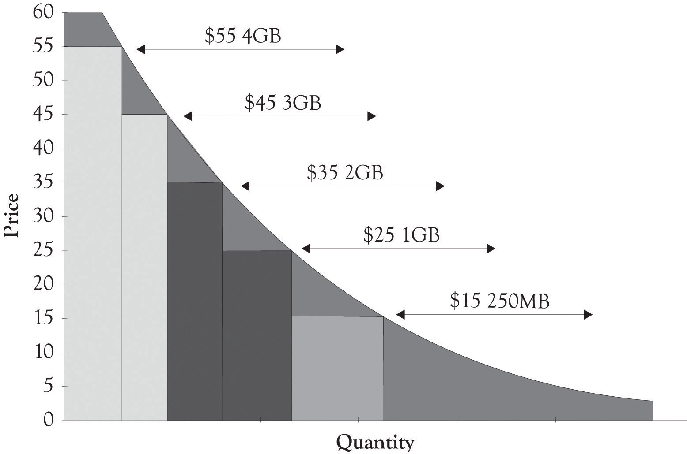

Because Apple had such a strong brand and was very successful, they were able to secure part of the ongoing revenue stream that AT&T received as a wireless carrier. The success of the iPhone resulted in extreme demands on the AT&T network and this led to the introduction of a pay-for-level-of-use program in the middle of 2010 when the Apple iPhone 4 was introduced. One objective of the service differentiation plans was to reduce network traffic, but it also gave Apple and AT&T the ability to extract more revenue from their existing customer base and to attract new more price-sensitive customers. The original data plan was $30 with no restrictions on the amount of data streamed. Under the new pricing structure, customers with deep pockets and less sensitive willingness-to-pay functions would readily pay $25 for 2 gigabytes of streaming and $10 for each additional gigabyte. Apple has recently introduced new iPhones at substantially reduced prices than their earlier launches. The iPhone models entered in at what we view as Atlas levels of $199 and $299. Apple also revamped their data plan to capture some Hermes-level customers by introducing a revamped data plan. The new low-end plan was $15 and this included 200 megabytes of streamed data for more price-sensitive customers. These plans will of course evolve as Apple and AT&T conduct further competitive experiments on the right combination of phones and data plans. Figure 5.9 "iPhone 4 Data Stream Plans" illustrates the service differentiation curve for the data plans.
Figure 5.9 iPhone 4 Data Stream Plans
